Campgrounds on Golf Courses: Spring Event @ Buhl Park
June 29, 2025
It was nice out. The weather had been shaky as spring began to take form. The gauntlet of constant showers, cold spells, and sneaky humidity had all of us in the spin cycle of layering up just to shed by midday. But at the time, it was nice enough to get out of the car and find my way onto one of those cement picnic tables. I leaned in to catch the imprint of the shards spread across the surface into my forearms.
The table was off Montgomery Rd, one of the longest stroads in Cincinnati.
A stroad is a street-road combo that tries to accomplish the purpose of both a street and a road. Stroads actually accomplish neither and are 10x more dangerous and costly. A road is a high-speed connection between two points. A street is a place where a town builds wealth and one feels safe to be a human. A stroad , picture the monstrosities that hold McDonald's, Walmarts, Jiffy Lubes. Have you ever heard anyone say, "Hey, let's go hang out down by the stroad"?
Surrounded by the fast-paced motion and noise of CR-Vs and F-150s, I was looking forward to this weekend's frontier.
I had just hopped on a call with Tom and Ryan from Buhl Park in Sharon, PA. Buhl Park is home to Dum Dum Golf Course, the only free golf course in the United States. I camped out here last October. It was such a cool experience, I wanted to hold an event , a test run for one in the fall , before heading up to Michigan for the summer.
"My only concern is that we have one person signed up, and it's you," Tom said over the phone.
My heart dropped, prepared to face the potential embarrassment of hosting a dud. After treading the waves of fear, I knew I would just enjoy myself the way I had last fall , diving deep into the rugged somatic experience, adding another notch in the belt with higher hopes of spreading the idea.
But what is failure in creation?
This is an idea I've been wrestling with on this creative journey. Success in this case was going through with the event and taking photos to show people what is possible. Tom and Ryan understood this sentiment.
Although no one had signed up yet, I knew I wasn't going to be by myself the entire weekend. Right after I posted a flyer on Instagram, a Hermitage, PA local DMed me about her brother who loves the idea. Her brother's name is Nick, and he's the superintendent at a local course called Tam O'Shanter. We connected over a shared love for golf and the outdoors.
We scouted out areas around the course that would be great for camping. There was the big grass bowl alongside the stream that bisects the 5th fairway. Then there was the tee box on 7, under the canopy alongside the pond. As we made our way back to the shop, we drove past the burn pile to the right of the 7th fairway.
"Could you imagine camping out here with this thing burning?" Nick asked me.
"When do you guys typically burn this thing?" I asked.
"The beginning and end of the season, around October."
Good to note.
Following my time at Tammy, I made my way to Buhl Park to meet up with Ryan. The thought of no one showing up ran through my mind. My perspective changed as I drove past a yard decorated full of plastic skeletons. Despite the attendance, I might as well do what I love before it's too late.
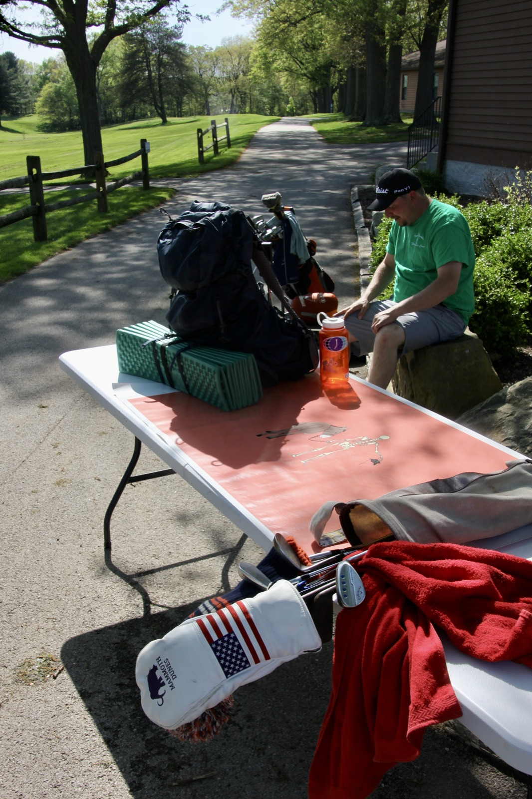
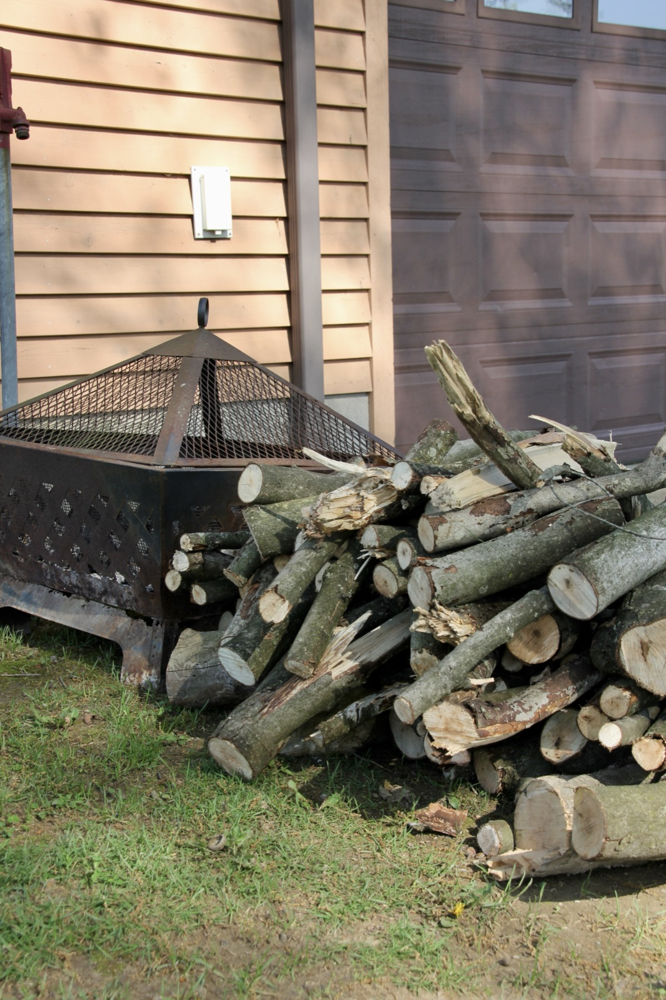
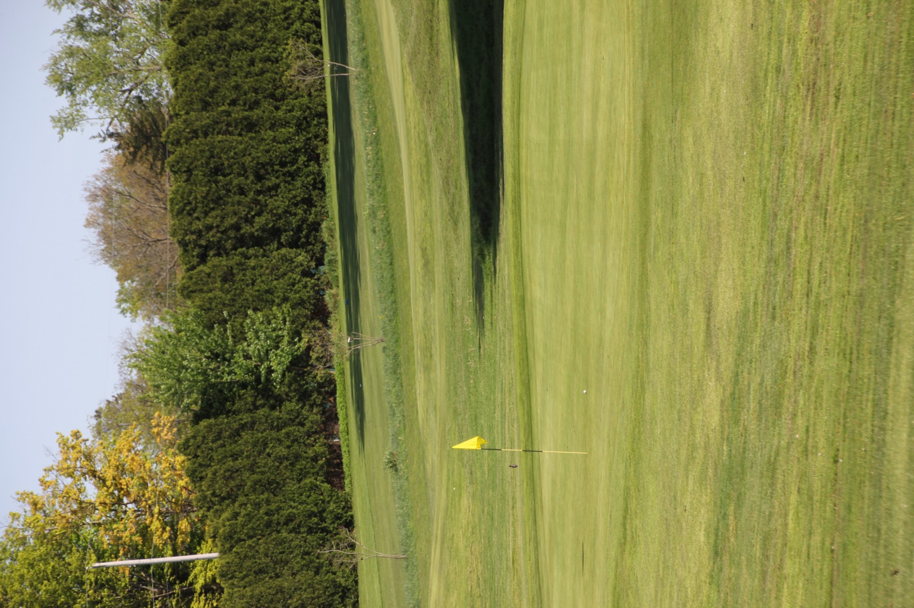
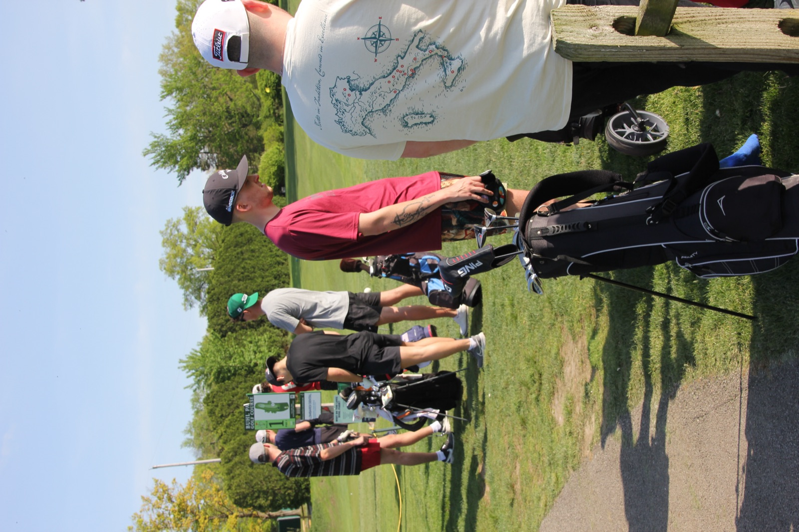
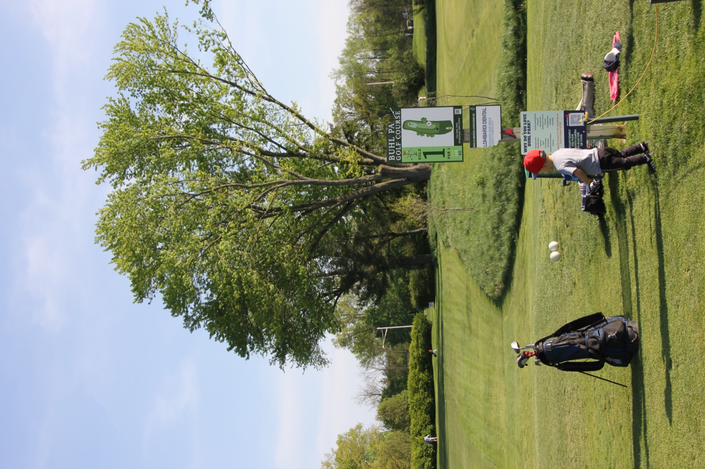
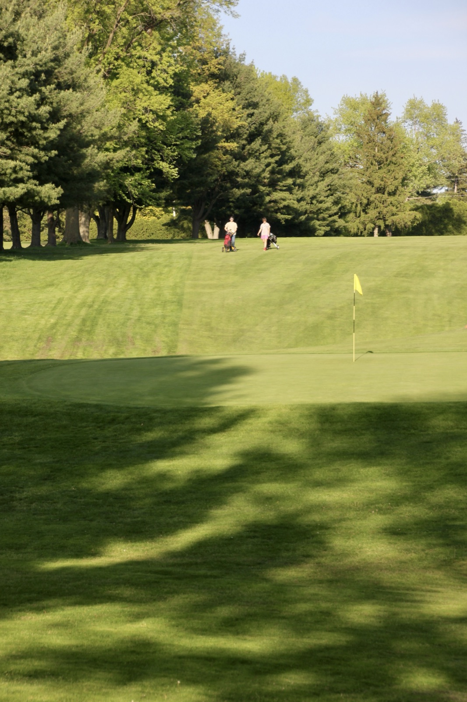
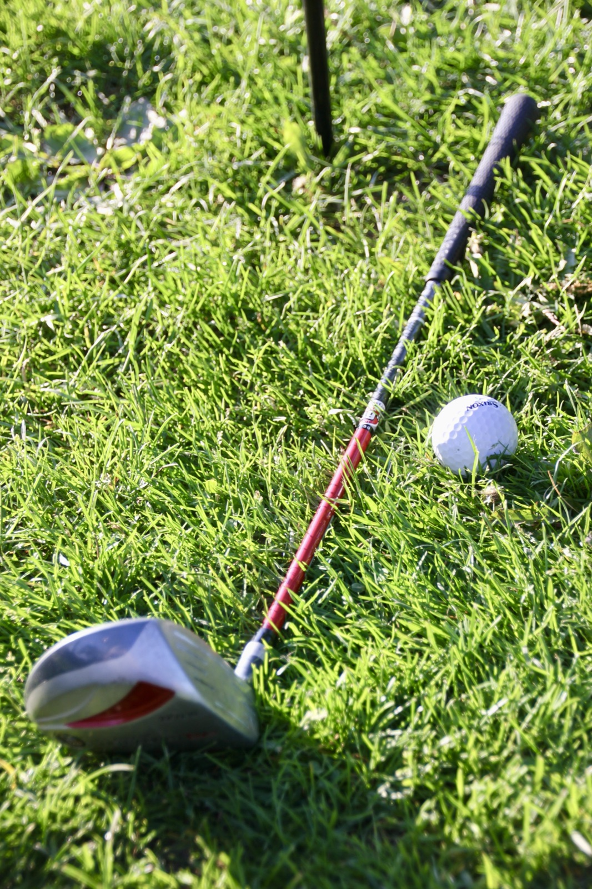
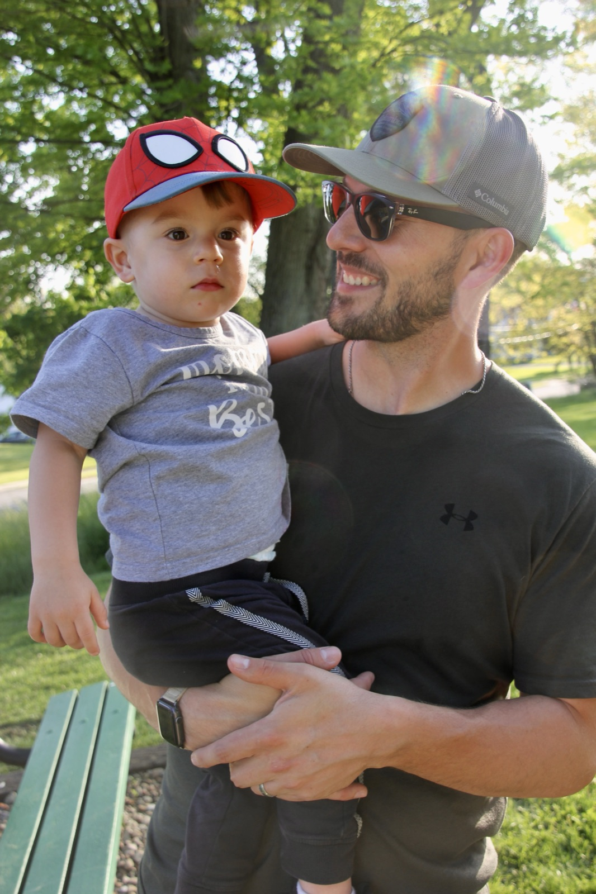
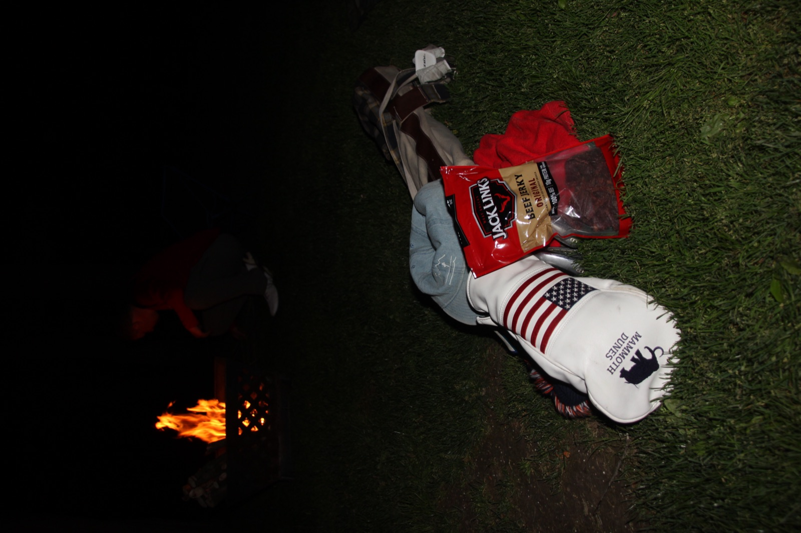
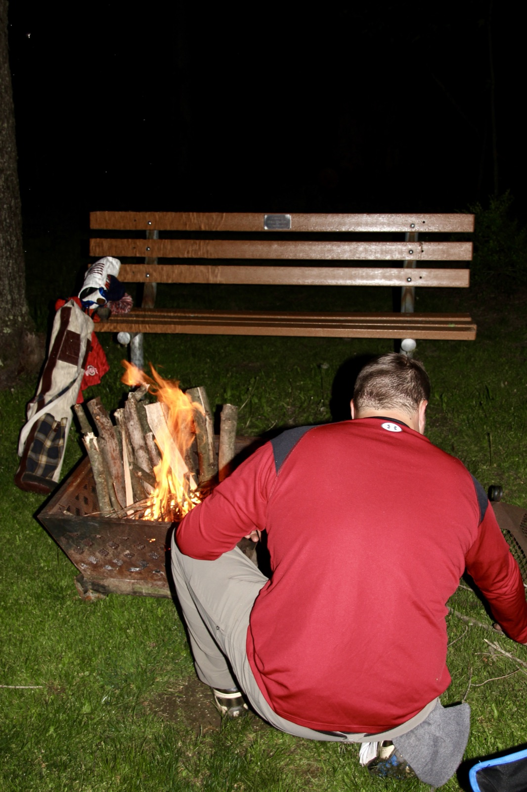
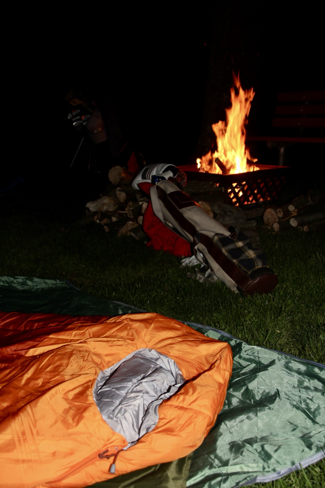
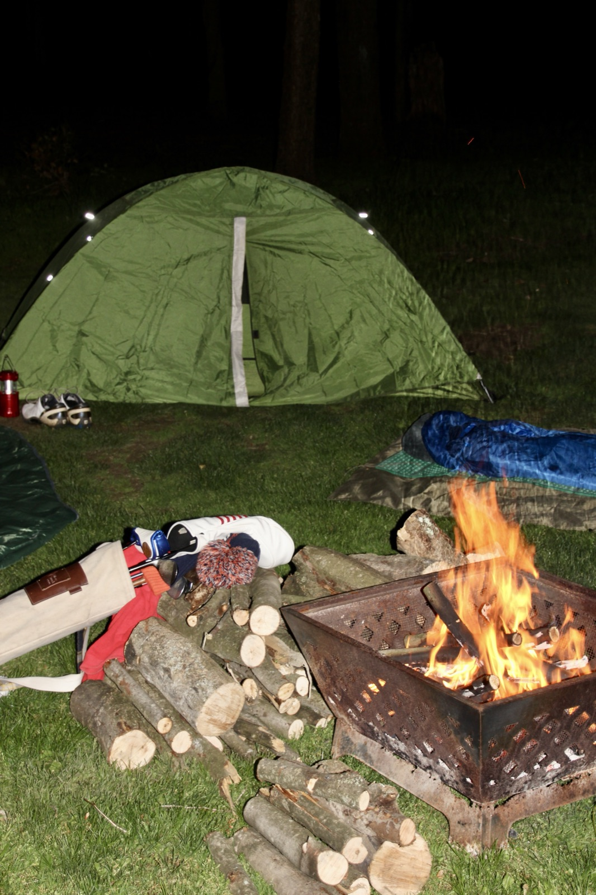
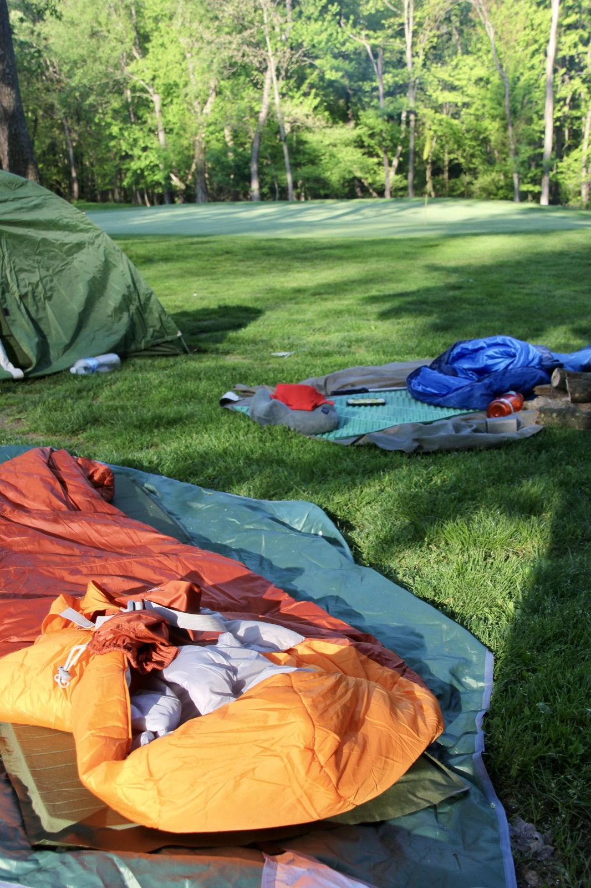
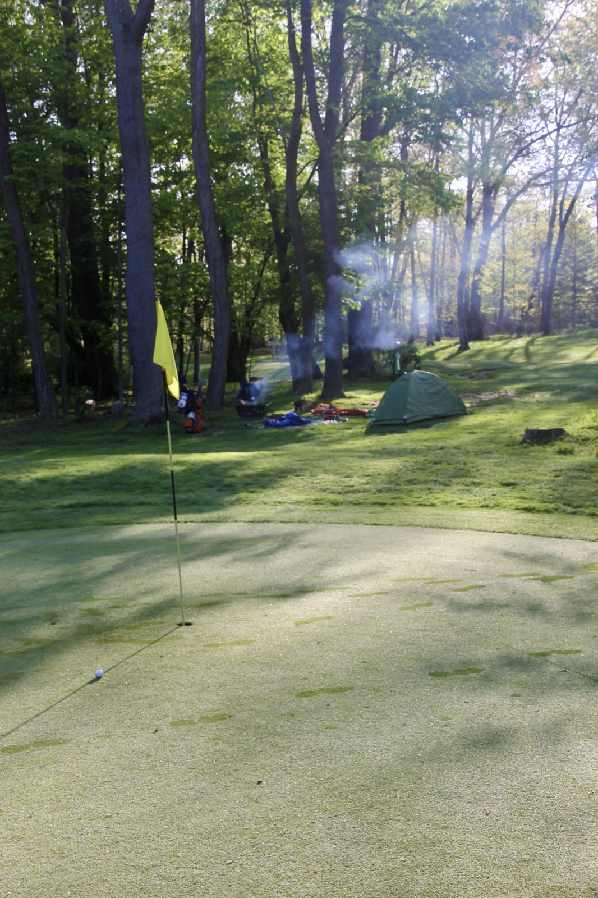